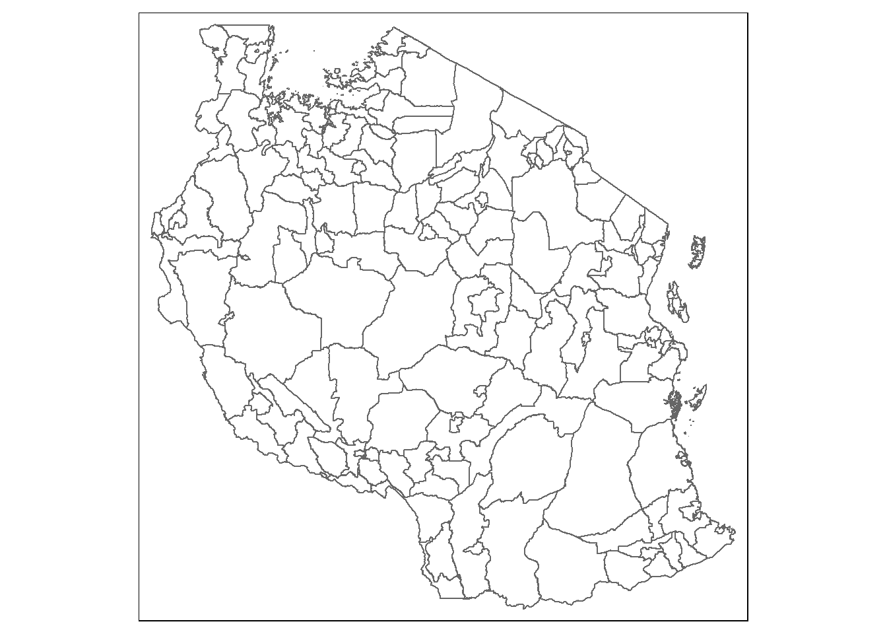
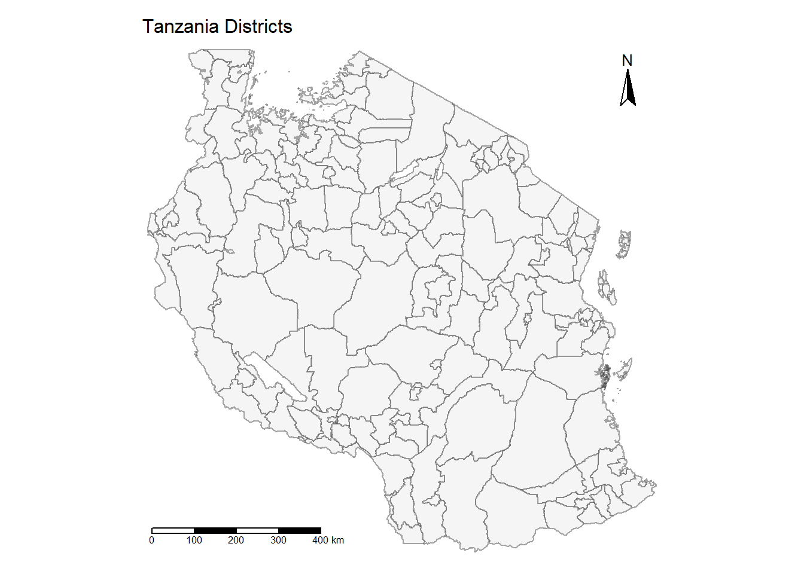

This take-home exercise examines the geography of financial inclusion through geographically weighted regression (GWR) to identify and analyse factors influencing access to financial services. Using the FinScope 2023 dataset for Tanzania, this study will focus on district-level insights, offering a spatial perspective on financial inclusion determinants. The exercise will involve geospatial data wrangling, model diagnostics, and geovisualisation, adhering to the grading criteria for data handling, analytical rigour, effective visual communication, and reproducibility in a Quarto environment. The research is grounded in existing literature on financial inclusion, specifically insights from Tanzania, where financial inclusion plays a pivotal role in economic empowerment and reducing income inequality. The goal is to provide a clear, data-driven understanding of spatial accessibility to financial services, with the results aimed at informing policies for broader economic inclusivity.
The research paper on financial inclusion in Tanzania offers valuable insights into the determinants, barriers, and impacts of financial inclusion, highlighting the role of mobile banking and formal financial services in improving economic well-being. It identifies education and income as key determinants and recognises geographic constraints—such as distance to financial institutions—as significant barriers to access. This aligns closely with the objectives of the take-home exercise, which seeks to model the spatial aspects of financial inclusion at the district level. By employing geographically weighted regression (GWR), this exercise will expand upon the research findings by focusing specifically on spatial variability in financial access. The geographic emphasis in this study offers a nuanced understanding of how location influences financial inclusion, which could lead to targeted interventions to overcome geographic barriers and support underserved regions, thereby complementing the study’s broader socio-economic conclusions.
Understanding Tanzania: A Contextual Introduction
As a Singaporean student analysing financial inclusion in Tanzania, I find it crucial to first understand the country’s unique characteristics. While Singapore and Tanzania might seem vastly different, both share a British colonial history and gained independence in the 1960s. However, their development paths have diverged significantly. Here’s a comprehensive overview of Tanzania that will help frame my analysis:
Why This Context Matters
Before diving into financial inclusion statistics and analysis, understanding Tanzania’s geography, economy, and demographics is essential because:
1. Physical geography influences access to services
2. Economic activities affect financial needs
3. Population distribution impacts service delivery
4. Infrastructure development determines financial service reach
Understanding these features also helps me:
1. Identify potential barriers to financial inclusion
2. Understand regional variations in service access
3. Appreciate the role of mobile money in overcoming geographical challenges
4. Recognise why different regions might need different financial solutions
Coming from Singapore’s context of universal banking access and high technological adoption, this understanding helps me approach the analysis with appropriate context and avoid making assumptions based on my Singaporean experience. The vast differences in geography, population distribution, and economic activities between Tanzania and Singapore highlight why financial inclusion solutions that work in Singapore might not be directly applicable to Tanzania.
Key Comparisons with Singapore
library(knitr)
Warning: package 'knitr' was built under R version 4.3.3
library(kableExtra)
Warning: package 'kableExtra' was built under R version 4.3.3
comparison_df <-data.frame(Aspect =c("Land Area", "Population", "GDP per capita", "Urbanisation", "Main Economic Sectors", "Capital City"),Tanzania =c("945,087 km²", "~61 million", "~$1,300 USD","35.2% urban", "Agriculture, Mining, Tourism", "Dodoma (official), Dar es Salaam (de facto)"),Singapore =c("728 km²", "~5.7 million", "~$75,000 USD","100% urban", "Finance, Technology, Trade", "Singapore"))kable(comparison_df, caption ="Key Comparisons between Tanzania and Singapore") %>%kable_styling(bootstrap_options =c("striped", "hover"),full_width =FALSE) %>%column_spec(1, bold =TRUE) %>%column_spec(2:3, width ="20em")
Key Comparisons between Tanzania and Singapore
Aspect
Tanzania
Singapore
Land Area
945,087 km²
728 km²
Population
~61 million
~5.7 million
GDP per capita
~$1,300 USD
~$75,000 USD
Urbanisation
35.2% urban
100% urban
Main Economic Sectors
Agriculture, Mining, Tourism
Finance, Technology, Trade
Capital City
Dodoma (official), Dar es Salaam (de facto)
Singapore
Geographical Diversity
Unlike Singapore’s uniform urban landscape, Tanzania presents complex geographical features:
1. Physical Features:
800km Indian Ocean coastline
Great Rift Valley running through central regions
Mount Kilimanjaro (Africa’s highest peak)
Major lakes (Victoria, Tanganyika)
2. Economic Zones:
Northern Circuit (Tourism)
Southern Highlands (Agriculture)
Lake Zone (Fishing, Mining)
Coastal Zone (Trade, Services)
Development Challenges
As a student from Singapore, I notice several contrasts in development challenges:
1. Infrastructure:
Transportation networks concentrated in certain regions
Rural-urban connectivity issues
Varying quality of telecommunications coverage
2. Economic:
Large rural population (64.8%)
Regional economic disparities
Heavy reliance on agriculture
Informal sector significance
3. Financial Services:
45 licensed banks (mostly in urban areas)
32.3 million mobile money accounts
65% financial inclusion rate
Over 100 microfinance institutions
Administrative Structure
Tanzania’s governance structure affects service delivery:
- 31 regions
- 184 districts
- Two capital cities:
* Dodoma (Official capital, centrally located)
* Dar es Salaam (Economic hub, coastal location)
In my subsequent analysis, I’ll refer back to these contextual factors to ensure my interpretation of financial inclusion patterns is grounded in Tanzania’s unique circumstances rather than Singapore’s standards.
Load the packages and data
# Load the required packagespacman::p_load(sf, tidyverse, tmap)# Read the shapefile# Replace the path with your actual file locationtz_boundaries <-st_read(dsn ="data/geospatial/", layer ="geoBoundaries-TZA-ADM2")
Reading layer `geoBoundaries-TZA-ADM2' from data source
`C:\zzzzzuu\ISSS626GAA\Take-home_Ex\Take-home_Ex03\data\geospatial'
using driver `ESRI Shapefile'
Simple feature collection with 170 features and 5 fields
Geometry type: MULTIPOLYGON
Dimension: XY
Bounding box: xmin: 29.58953 ymin: -11.76235 xmax: 40.44473 ymax: -0.983143
Geodetic CRS: WGS 84
# Check the CRS (Coordinate Reference System)st_crs(tz_boundaries)
Coordinate Reference System:
User input: WGS 84
wkt:
GEOGCRS["WGS 84",
ENSEMBLE["World Geodetic System 1984 ensemble",
MEMBER["World Geodetic System 1984 (Transit)"],
MEMBER["World Geodetic System 1984 (G730)"],
MEMBER["World Geodetic System 1984 (G873)"],
MEMBER["World Geodetic System 1984 (G1150)"],
MEMBER["World Geodetic System 1984 (G1674)"],
MEMBER["World Geodetic System 1984 (G1762)"],
MEMBER["World Geodetic System 1984 (G2139)"],
ELLIPSOID["WGS 84",6378137,298.257223563,
LENGTHUNIT["metre",1]],
ENSEMBLEACCURACY[2.0]],
PRIMEM["Greenwich",0,
ANGLEUNIT["degree",0.0174532925199433]],
CS[ellipsoidal,2],
AXIS["geodetic latitude (Lat)",north,
ORDER[1],
ANGLEUNIT["degree",0.0174532925199433]],
AXIS["geodetic longitude (Lon)",east,
ORDER[2],
ANGLEUNIT["degree",0.0174532925199433]],
USAGE[
SCOPE["Horizontal component of 3D system."],
AREA["World."],
BBOX[-90,-180,90,180]],
ID["EPSG",4326]]
# Take a quick look at the dataglimpse(tz_boundaries)
# Create a quick plot to verify the importtm_shape(tz_boundaries) +tm_borders()

# Load required packages if not already loadedpacman::p_load(sf, tidyverse, tmap)# Read the shapefile and explore its contentstz_boundaries <-st_read("data/geospatial/geoBoundaries-TZA-ADM2.shp")
Reading layer `geoBoundaries-TZA-ADM2' from data source
`C:\zzzzzuu\ISSS626GAA\Take-home_Ex\Take-home_Ex03\data\geospatial\geoBoundaries-TZA-ADM2.shp'
using driver `ESRI Shapefile'
Simple feature collection with 170 features and 5 fields
Geometry type: MULTIPOLYGON
Dimension: XY
Bounding box: xmin: 29.58953 ymin: -11.76235 xmax: 40.44473 ymax: -0.983143
Geodetic CRS: WGS 84
# Examine the structure and attributesglimpse(tz_boundaries)
shapeName shapeISO shapeID shapeGroup
Length:170 Length:170 Length:170 Length:170
Class :character Class :character Class :character Class :character
Mode :character Mode :character Mode :character Mode :character
shapeType geometry
Length:170 MULTIPOLYGON :170
Class :character epsg:4326 : 0
Mode :character +proj=long...: 0
# Create an initial visualization with district namestm_shape(tz_boundaries) +tm_borders() +tm_layout(main.title ="Tanzania Districts",main.title.size =1)
# Check the number of districtscat("Number of districts:", nrow(tz_boundaries))
Number of districts: 170
# Clean and transform the spatial datatz_districts <- tz_boundaries %>%# Keep only necessary columnsselect(district_name = shapeName,district_id = shapeID, geometry) %>%# Convert to more appropriate projection for Tanzaniast_transform(crs =32737) %>%# UTM Zone 37S# Arrange alphabetically by district namearrange(district_name)# Create a more detailed map to verify the datatm_shape(tz_districts) +tm_polygons(col ="whitesmoke",border.col ="gray30",border.alpha =0.5) +tm_layout(main.title ="Tanzania Districts",main.title.size =1,frame =FALSE) +tm_compass(position =c("right", "top")) +tm_scale_bar(position =c("left", "bottom"))

# Save the cleaned spatial datast_write(tz_districts, "data/cleaned/tz_districts.shp", append =FALSE)
Warning in abbreviate_shapefile_names(obj): Field names abbreviated for ESRI
Shapefile driver
Deleting layer `tz_districts' using driver `ESRI Shapefile'
Writing layer `tz_districts' to data source
`data/cleaned/tz_districts.shp' using driver `ESRI Shapefile'
Writing 170 features with 2 fields and geometry type Multi Polygon.
# Create a data frame of district names for referencedistrict_names <- tz_districts %>%st_drop_geometry() %>%select(district_name) %>%arrange(district_name)# View first few district nameshead(district_names, 10)